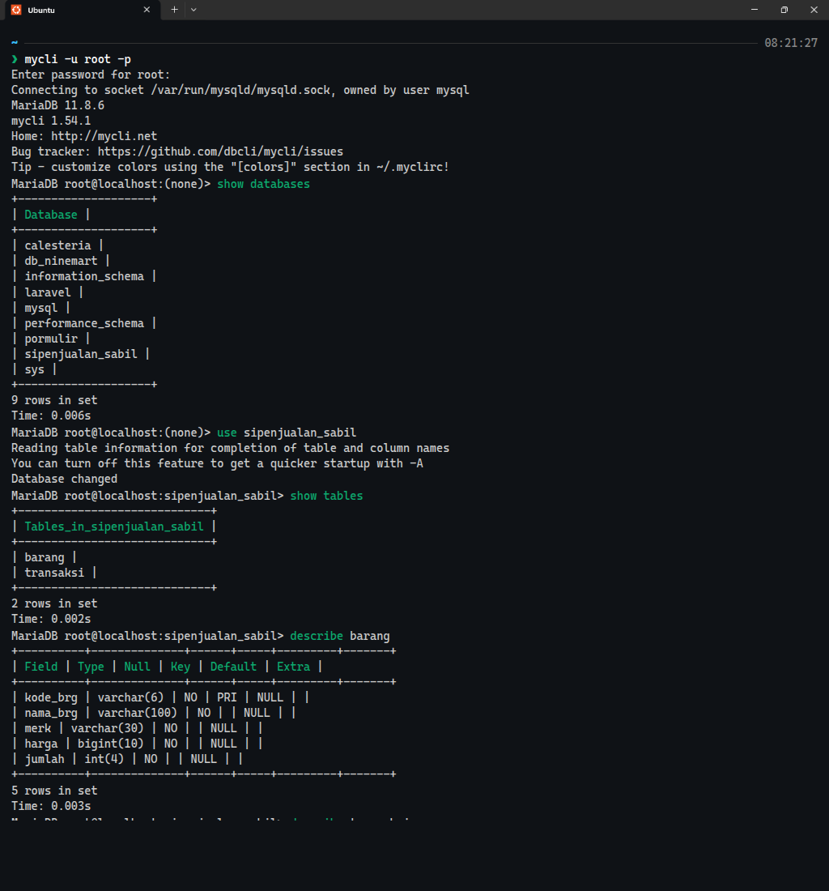
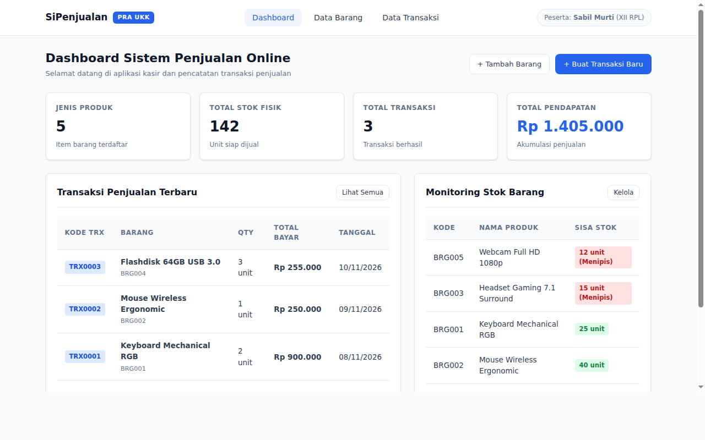
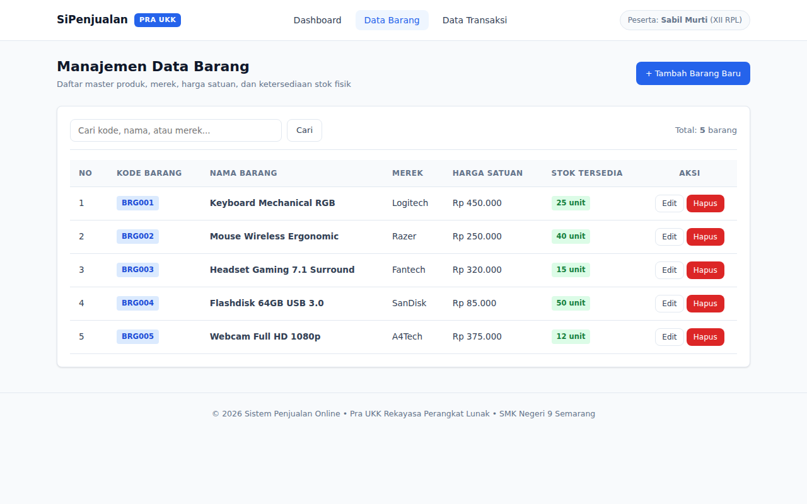
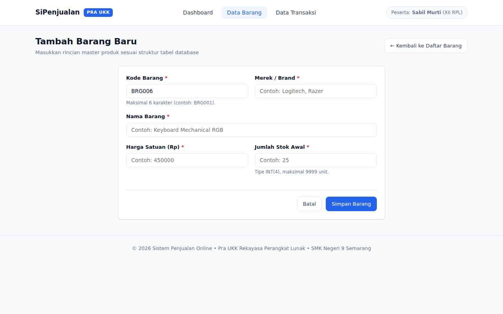
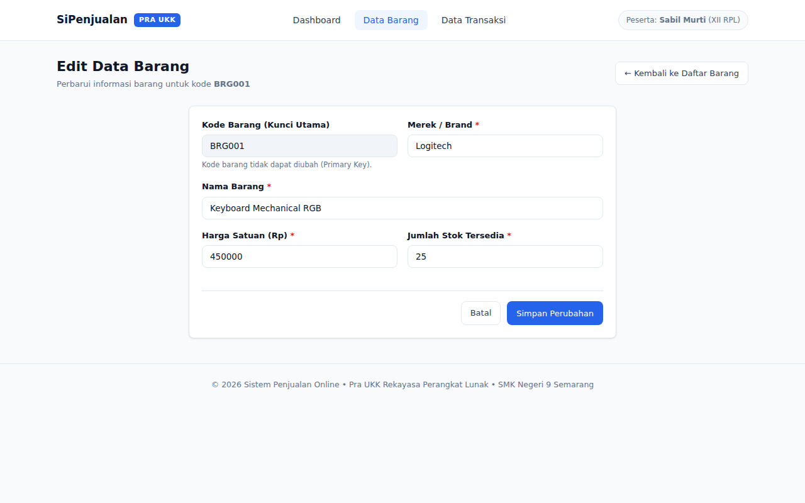
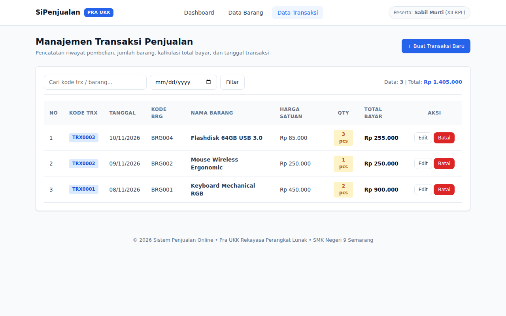
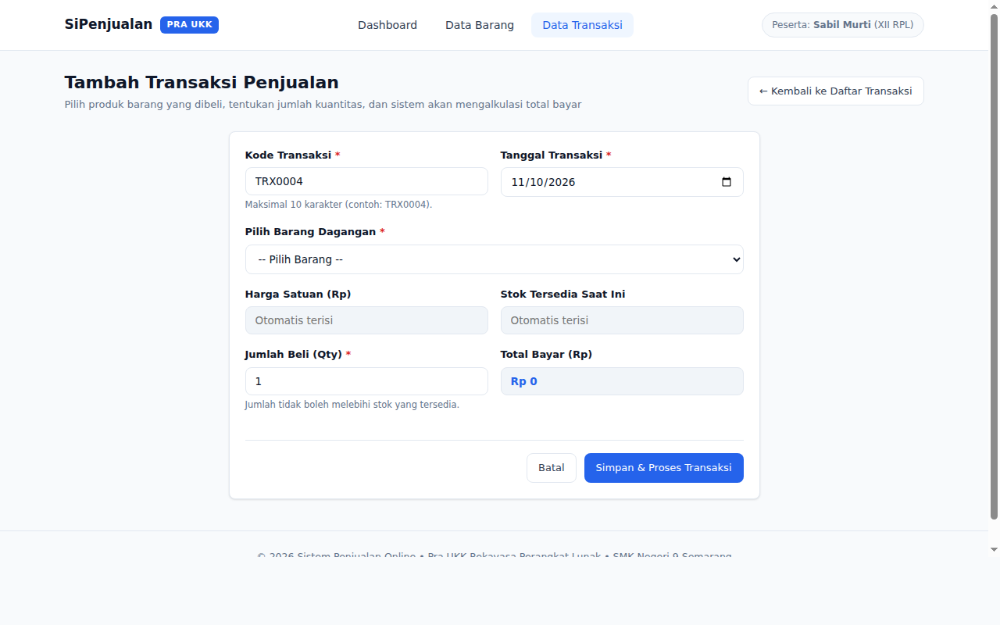
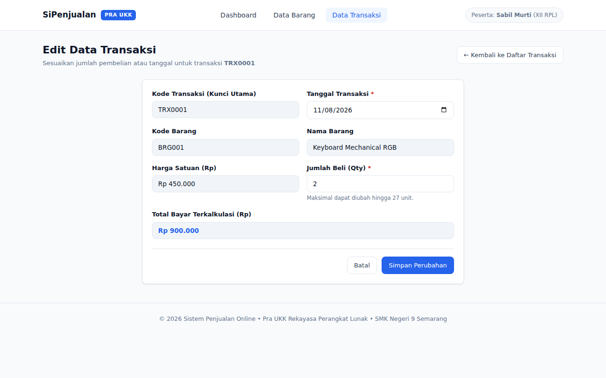
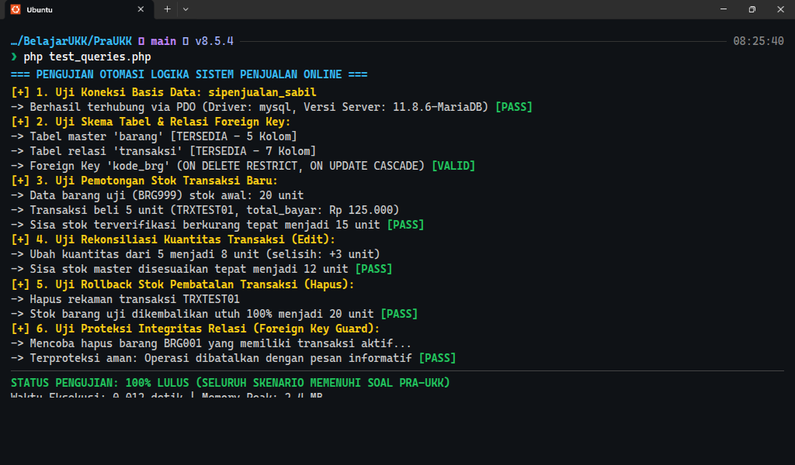

Laporan Dokumentasi Teknis, Arsitektur Basis Data, & Pengujian Transaksi Atomik
Sistem Penjualan Online adalah aplikasi pengelolaan inventaris barang dan pencatatan transaksi penjualan yang dirancang khusus untuk memenuhi standar penilaian Pra Uji Kompetensi Keahlian (Pra-UKK) SMK Rekayasa Perangkat Lunak. Sistem ini mengadopsi pendekatan arsitektur PHP Native terstruktur dengan koneksi PDO (PHP Data Objects) dan basis data MariaDB/MySQL.
Aplikasi dibangun secara mandiri tanpa menggunakan framework eksternal yang rumit sehingga seluruh alur data, validasi, dan transaksi berada di bawah kendali penuh peserta didik dan dapat dengan mudah ditulis ulang saat pelaksanaan ujian praktik di laboratorium sekolah.
| Komponen | Spesifikasi Implementasi |
|---|---|
| Bahasa Pemrograman | PHP 8.0+ (PHP Native, PDO Extension, Strict Server-Side Validation) |
| Basis Data | MariaDB 10.4+ / MySQL 8.0 (Nama Database: sipenjualan_sabil) |
| Desain Antarmuka (UI) | Pure CSS Modern (Desain Bersih Slate/Sky, Tata Letak Grid/Flexbox, Zero-Slop) |
| Logika Transaksi | Atomic Stock Sync (Otomasi Subtotal, Pemotongan Stok, Rekonsiliasi & Rollback) |
| Keamanan Data | PDO Prepared Statements (Anti SQL Injection) & htmlspecialchars (Anti XSS) |
PraUKK/ ├── assets/ │ └── css/style.css # Sistem desain antarmuka murni ├── config/ │ └── database.php # Koneksi PDO terpusat ├── database/ │ └── sipenjualan_sabil.sql # Skrip skema DDL & data awal ├── dokumen/ # Dokumentasi teknis, presentasi, & screenshots ├── includes/ │ ├── header.php # Navigasi atas global │ └── footer.php # Penutup halaman global ├── index.php # Dashboard metrik & ringkasan bisnis ├── barang.php # Katalog inventaris master barang ├── barang_tambah.php # Form input barang baru ├── barang_edit.php # Form pembaruan data barang ├── barang_hapus.php # Hapus barang terproteksi FK ├── transaksi.php # Riwayat transaksi penjualan ├── transaksi_tambah.php # Transaksi baru & pemotongan stok otomatis ├── transaksi_edit.php # Edit transaksi & rekonsiliasi kuantitas stok ├── transaksi_hapus.php # Pembatalan transaksi & rollback stok └── test_queries.php # Skrip otomasi uji fungsional sistem
Sesuai spesifikasi Paket I Soal Pra-UKK, basis data diberi nama sipenjualan_sabil dengan 2 entitas relasional: tabel master barang dan tabel transaksi transaksi.
| Field | Type | Null | Key | Default | Keterangan |
|---|---|---|---|---|---|
| kode_brg | VARCHAR(6) | NO | PRI | NULL | Kode unik barang (Primary Key, cth: BRG001) |
| nama_brg | VARCHAR(100) | NO | NULL | Nama lengkap barang dagangan | |
| merk | VARCHAR(30) | NO | NULL | Merek / brand produsen | |
| harga | BIGINT(10) | NO | NULL | Harga jual satuan (Rupiah) | |
| jumlah | INT(4) | NO | 0 | Kuantitas stok barang yang tersedia |
| Field | Type | Null | Key | Default | Keterangan |
|---|---|---|---|---|---|
| kode_transaksi | VARCHAR(10) | NO | PRI | NULL | Nomor unik transaksi (Primary Key, cth: TRX001) |
| kode_brg | VARCHAR(6) | NO | MUL | NULL | Kunci tamu (Foreign Key) ke barang.kode_brg |
| nama_brg | VARCHAR(60) | NO | NULL | Nama barang saat transaksi terjadi | |
| harga | BIGINT(10) | NO | NULL | Harga satuan saat transaksi terjadi | |
| jumlah | INT(4) | NO | NULL | Kuantitas unit barang yang terjual | |
| total_bayar | BIGINT(10) | NO | NULL | Subtotal pembayaran (harga * jumlah) | |
| tanggal | DATE | NO | NULL | Tanggal pelaksanaan transaksi |
Relasi foreign key didefinisikan dengan klausa ON DELETE RESTRICT ON UPDATE CASCADE untuk menjamin riwayat transaksi penjualan tidak terputus bila barang hendak dihapus secara sengaja maupun tidak sengaja.

Dashboard menampilkan ringkasan 4 kartu metrik utama secara real-time: Total Varian Barang, Total Transaksi, Akumulasi Omset, serta deteksi stok menipis (sisa ≤ 5 unit) yang memicu banner peringatan otomatis.

Tabel inventaris menyajikan seluruh stok barang dengan penomoran urut otomatis, badge visual ketersediaan (Aman / Menipis), dan pemformatan rupiah berstandar Indonesia.

Formulir tambah mengonversi input kode barang menjadi huruf kapital secara otomatis serta memvalidasi keunikan kode. Formulir edit mengunci kolom Primary Key menjadi readonly agar relasi basis data tetap terjaga.


Riwayat transaksi disajikan secara kronologis terurut waktu terbaru lengkap dengan informasi tanggal, barang, kuantitas, harga, dan total pembayaran.

Memilih barang pada dropdown otomatis mengisi harga satuan dan menetapkan batas maksimal kuantitas pembelian. Nilai total bayar terkalkulasi secara instan pada layar dan stok barang di gudang langsung dipotong saat transaksi disimpan.


Paket III membuktikan integritas sistem melalui serangkaian pengujian batas (edge cases):

| No | Paket Uji | Skenario Pengujian | Hasil yang Diharapkan | Status |
|---|---|---|---|---|
| 1 | Paket I | Koneksi PDO ke basis data | Koneksi berhasil dan skema terbaca utuh | LULUS (100%) |
| 2 | Paket I | Struktur tabel barang & transaksi | Struktur kolom dan relasi FK valid | LULUS (100%) |
| 3 | Paket II | Input barang baru dengan kode unik | Tersimpan dan kode terformat kapital | LULUS (100%) |
| 4 | Paket II | Validasi duplikasi kode barang | Ditolak dengan pesan validasi jelas | LULUS (100%) |
| 5 | Paket II | Kalkulasi total bayar transaksi | total_bayar = harga * jumlah tepat | LULUS (100%) |
| 6 | Paket III | Pemotongan stok transaksi baru | Stok master berkurang tepat sesuai pembelian | LULUS (100%) |
| 7 | Paket III | Rekonsiliasi selisih stok saat edit | Stok disesuaikan proporsional | LULUS (100%) |
| 8 | Paket III | Rollback stok saat transaksi dihapus | Stok dikembalikan utuh ke tabel master | LULUS (100%) |
Berdasarkan proses pengembangan dan rangkaian pengujian yang telah dipaparkan:
Status Akhir: Sistem Penjualan Online dinyatakan KOMPETEN dan SIAP untuk diujikan pada pelaksanaan Uji Kompetensi Keahlian (UKK).